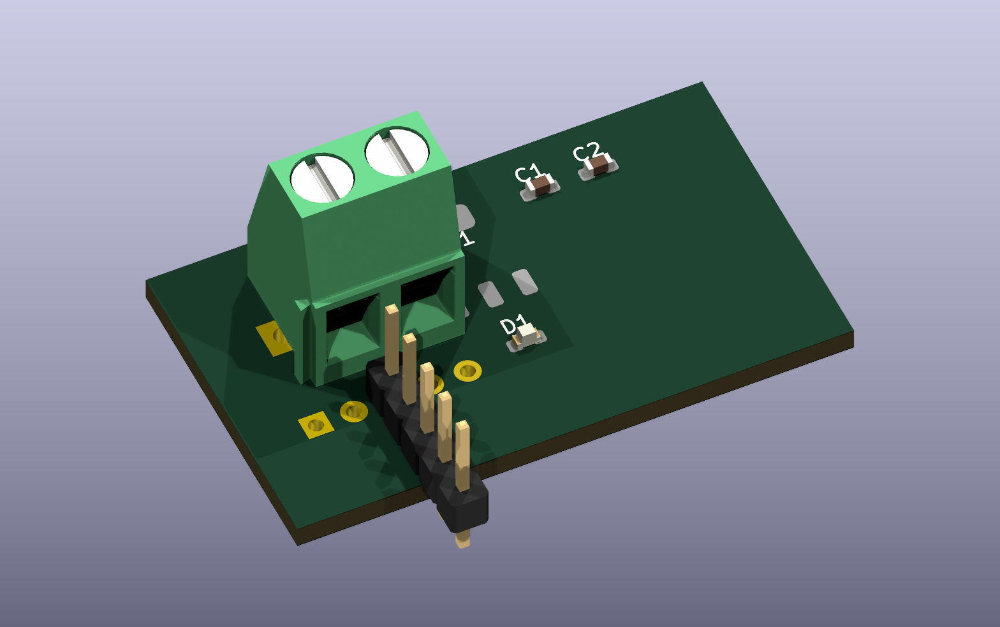
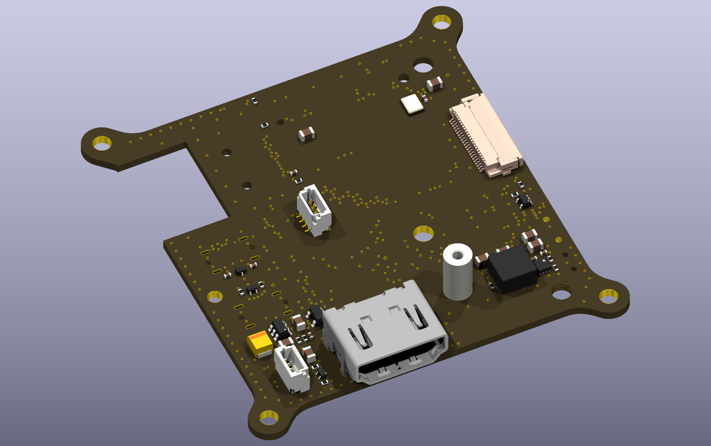
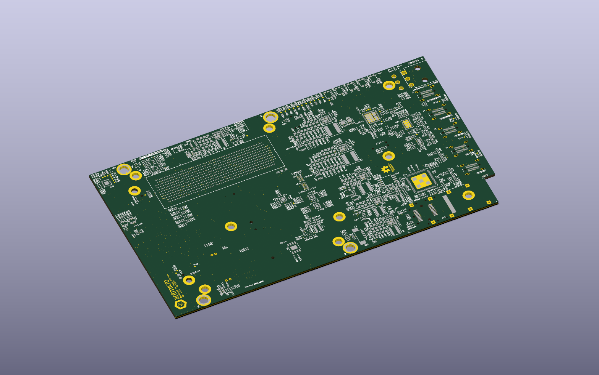
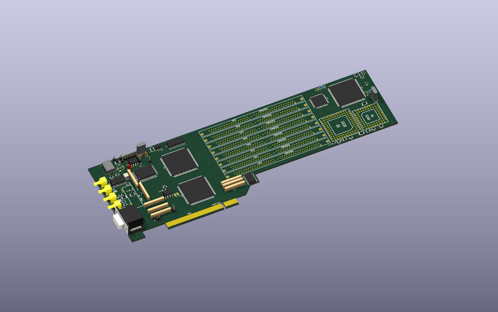

usb_dongle_09
10 per batchstation-1rank 1
24.2 x 15.5 mm, 2 layers, 9 parts. 6 probes from the bottom, 100% of nets covered, 5 measured channels. 10 per batch on station-1, limited by plate.
128 boards, 2 stations: 119 fit (93.0%), 382 boards per full load of every fixture. Every station's fixtures share one connector; every board that fits has its own guide, fixture, nest and clamp, jigs and runner.
Each station is one tester: a plate with one connector that every fixture plugs into. Swap the fixture to test another board type.
Takes 118 board types, 381 boards per load in all.
| It needs | Count | |
|---|---|---|
| Plate | 300 x 220 mm | 4 holes; 300 x 201.46 mm for the boards |
| Socket J1 | 80 pins | 2 x 40 socket, 2.54 mm |
| Socket J2 | 52 pins | 2 x 26 socket, 2.54 mm |
| Analog inputs | 56 | 0..10 V; 14 x 4-channel 16-bit ADC (e.g. ADS1115); most at once 54 (power_02) |
| Switched supplies | 8 | a switched, current-limited output per board of a batch, adjustable 3.3..24 V, up to 0.5 A |
| CAN | 4 | a CAN transceiver per instance (ISO 11898, 120 ohm termination you can switch) can_node_01, can_node_02, can_node_03, can_node_04, can_node_05, can_node_06 ... |
| Ethernet | 2 | a 100BASE-TX port with magnetics per instance (the pairs go through pogo pins: keep them under 50 mm) controller_01, controller_02, controller_03, controller_04, controller_05, controller_06 ... |
| I2C | 4 | an I2C controller per instance, with pull-ups avr_board_01, avr_board_06, avr_board_07, power_01, power_04, power_08 ... |
| RS485 | 2 | a half-duplex RS-485 transceiver per instance gateway_02, gateway_03, gateway_04, rs485_io_01, rs485_io_02, rs485_io_03 ... |
| UART | 4 | a 3.3 V UART per instance (TX/RX crossed: the board's TX goes to the station's RX) avr_board_01, avr_board_02, avr_board_03, avr_board_04, avr_board_05, avr_board_06 ... |
| USB | 2 | a USB 2.0 host port per instance (full speed through pogo pins: keep the traces short) controller_01, controller_02, controller_04, controller_05, controller_07, gateway_06 ... |
| Digital lines | 4 | spare |
| AVR ISP programmer | 4 | one per board of the largest batch avr_board_01, avr_board_02, avr_board_03, avr_board_04, avr_board_05, avr_board_06 ... |
| JTAG adapter | 4 | one per board of the largest batch controller_01, controller_02, controller_03, controller_04, controller_05, controller_06 ... |
| PIC ICSP programmer | 3 | one per board of the largest batch power_02, power_03, power_08 |
| SWD probe | 8 | one per board of the largest batch can_node_01, can_node_02, can_node_03, can_node_04, can_node_05, can_node_06 ... |
Takes 1 board types, 1 boards per load in all.
Plate: 400 x 300 mm takes 1 board types more than a 300 x 220 mm plate would (1 against 0); set large_plate_mm to [] in the spec to keep every station at plate_mm.
| It needs | Count | |
|---|---|---|
| Plate | 400 x 300 mm | 8 holes; 400 x 281.46 mm for the boards |
| Socket J1 | 46 pins | 2 x 23 socket, 2.54 mm |
| Analog inputs | 32 | 0..10 V; 8 x 4-channel 16-bit ADC (e.g. ADS1115); most at once 32 (video) |
| Switched supplies | 0 | a switched, current-limited output per board of a batch |
| Digital lines | 4 | spare |
Every board that fits, best first: its batch (boards per fixture), its station and what limits it. A board's name opens its production guide.
24.2 x 15.5 mm, 2 layers, 9 parts. 6 probes from the bottom, 100% of nets covered, 5 measured channels. 10 per batch on station-1, limited by plate.
34.4 x 15.7 mm, 2 layers, 10 parts. 6 probes from the bottom, 100% of nets covered, 4 measured channels. 9 per batch on station-1, limited by plate.

25.5 x 21.5 mm, 2 layers, 10 parts. 5 probes from the bottom, 83.3% of nets covered, 3 measured channels, powered on VBUS at 5 V. 8 per batch on station-1, limited by supplies.
34.2 x 22.3 mm, 2 layers, 13 parts (2 hand-soldered). 8 probes from the bottom, 100% of nets covered, 4 measured channels, powered on VIN_5V at 5 V, programmed over SWD. 8 per batch on station-1, limited by plate = supplies.
38.8 x 20.9 mm, 2 layers, 13 parts (2 hand-soldered). 9 probes from the bottom, 100% of nets covered, 4 measured channels, powered on VIN_5V at 5 V, programmed over SWD. 8 per batch on station-1, limited by supplies.
16.5 x 40 mm, 2 layers, 94 parts. 1 probe from the bottom, 2.2% of nets covered, 0 measured channels, powered on VIN. 6 per batch on station-1, limited by plate.
58.4 x 22.9 mm, 8 layers, 71 parts (5 hand-soldered). 6 probes from the top, 7.4% of nets covered, 4 measured channels, powered on /Debugger/USB.VBUS at 5 V. 6 per batch on station-1, limited by plate.
32.3 x 39.2 mm, 2 layers, 12 parts (2 hand-soldered). 9 probes from the bottom, 77.8% of nets covered, 5 measured channels, powered on VIN_5V at 5 V, programmed over SWD. 6 per batch on station-1, limited by plate.
32.5 x 30.5 mm, 2 layers, 11 parts (2 hand-soldered). 8 probes from the bottom, 85.7% of nets covered, 5 measured channels, powered on VIN_5V at 5 V, programmed over SWD. 6 per batch on station-1, limited by plate.
38.3 x 37.7 mm, 2 layers, 11 parts (2 hand-soldered). 8 probes from the bottom, 75% of nets covered, 5 measured channels, powered on VIN_5V at 5 V, programmed over SWD. 6 per batch on station-1, limited by plate.
53.9 x 23.6 mm, 2 layers, 17 parts (3 hand-soldered). 9 probes from the bottom, 70% of nets covered, 5 measured channels, powered on VIN_5V at 5 V, programmed over SWD. 6 per batch on station-1, limited by plate.
31.3 x 25.9 mm, 2 layers, 14 parts (1 hand-soldered). 8 probes from the bottom, 70% of nets covered, 5 measured channels, powered on VBUS at 5 V, programmed over SWD. 6 per batch on station-1, limited by plate.
52.1 x 46.4 mm, 2 layers, 15 parts (15 hand-soldered). 7 probes from the bottom, 66.7% of nets covered, 5 measured channels. 4 per batch on station-1, limited by plate.
48.3 x 41.9 mm, 2 layers, 15 parts (15 hand-soldered). 7 probes from the bottom, 66.7% of nets covered, 5 measured channels. 4 per batch on station-1, limited by plate.
42.1 x 25.3 mm, 2 layers, 11 parts (2 hand-soldered). 7 probes from the bottom, 75% of nets covered, 5 measured channels, powered on VIN_5V at 5 V, programmed over SWD. 4 per batch on station-1, limited by plate.
47.8 x 39.1 mm, 2 layers, 18 parts (3 hand-soldered). 8 probes from the bottom, 66.7% of nets covered, 5 measured channels, powered on VIN_5V at 5 V, programmed over SWD. 4 per batch on station-1, limited by plate.
41.7 x 38.1 mm, 2 layers, 15 parts (2 hand-soldered). 8 probes from the bottom, 66.7% of nets covered, 5 measured channels, powered on VIN_5V at 5 V, programmed over SWD. 4 per batch on station-1, limited by plate.
30.7 x 25.8 mm, 2 layers, 16 parts (1 hand-soldered). 9 probes from the bottom, 70% of nets covered, 4 measured channels, powered on VIN_5V at 5 V, I2C checked. 4 per batch on station-1, limited by i2c buses.
36.7 x 21.7 mm, 2 layers, 14 parts (3 hand-soldered). 11 probes from the bottom, 100% of nets covered, 2 measured channels, powered on VIN_5V at 5 V, I2C and UART checked, programmed over SWD. 4 per batch on station-1, limited by i2c buses = uart buses.
30.5 x 22.6 mm, 2 layers, 12 parts (1 hand-soldered). 9 probes from the bottom, 100% of nets covered, 4 measured channels, powered on VIN_5V at 5 V, I2C checked. 4 per batch on station-1, limited by i2c buses.
36.6 x 23 mm, 2 layers, 15 parts (2 hand-soldered). 10 probes from the bottom, 88.9% of nets covered, 4 measured channels, powered on VIN_5V at 5 V, UART checked. 4 per batch on station-1, limited by uart buses.
65.6 x 31.3 mm, 2 layers, 24 parts (3 hand-soldered). 10 probes from the bottom, 88.9% of nets covered, 5 measured channels, powered on VIN_12V at 12 V, CAN checked. 4 per batch on station-1, limited by can buses = plate.
53.5 x 27.1 mm, 2 layers, 16 parts (3 hand-soldered). 10 probes from the bottom, 80% of nets covered, 5 measured channels, powered on VIN_5V at 5 V, UART checked, programmed over SWD. 4 per batch on station-1, limited by plate = uart buses.
39.2 x 30.2 mm, 2 layers, 18 parts (3 hand-soldered). 11 probes from the bottom, 69.2% of nets covered, 5 measured channels, powered on VIN_5V at 5 V, UART checked, programmed over SWD. 4 per batch on station-1, limited by uart buses.
44.1 x 27.2 mm, 2 layers, 14 parts (2 hand-soldered). 10 probes from the bottom, 88.9% of nets covered, 5 measured channels, powered on VIN_5V at 5 V, I2C checked, programmed over SWD. 4 per batch on station-1, limited by i2c buses = plate.
46.5 x 39.8 mm, 2 layers, 20 parts (2 hand-soldered). 10 probes from the bottom, 80% of nets covered, 5 measured channels, powered on VIN_5V at 5 V, I2C checked, programmed over SWD. 4 per batch on station-1, limited by i2c buses = plate.
54.4 x 35.1 mm, 2 layers, 21 parts (3 hand-soldered). 10 probes from the bottom, 66.7% of nets covered, 5 measured channels, powered on VIN_5V at 5 V, UART checked, programmed over SWD. 4 per batch on station-1, limited by plate = uart buses.
33.3 x 36.9 mm, 2 layers, 14 parts (3 hand-soldered). 10 probes from the bottom, 80% of nets covered, 5 measured channels, powered on VIN_5V at 5 V, UART checked, programmed over SWD. 4 per batch on station-1, limited by uart buses.
67.2 x 42.5 mm, 2 layers, 19 parts (4 hand-soldered). 11 probes from the bottom, 81.8% of nets covered, 6 measured channels, powered on VIN_5V at 5 V, UART checked, programmed over AVR_ISP. 4 per batch on station-1, limited by plate = uart buses.
56.4 x 33.8 mm, 2 layers, 21 parts (4 hand-soldered). 11 probes from the bottom, 75% of nets covered, 6 measured channels, powered on VIN_12V at 12 V, UART checked, programmed over AVR_ISP. 4 per batch on station-1, limited by plate = uart buses.
68.2 x 42.7 mm, 2 layers, 26 parts (3 hand-soldered). 11 probes from the bottom, 75% of nets covered, 6 measured channels, powered on VIN_12V at 12 V, CAN checked, programmed over SWD. 4 per batch on station-1, limited by can buses = plate.
65.7 x 42.3 mm, 2 layers, 26 parts (4 hand-soldered). 11 probes from the bottom, 81.8% of nets covered, 6 measured channels, powered on VIN_12V at 12 V, CAN checked, programmed over SWD. 4 per batch on station-1, limited by can buses = plate.
64.4 x 32.3 mm, 2 layers, 24 parts (3 hand-soldered). 11 probes from the bottom, 90% of nets covered, 6 measured channels, powered on VIN_12V at 12 V, CAN checked, programmed over SWD. 4 per batch on station-1, limited by can buses = plate.
49.2 x 30.4 mm, 2 layers, 21 parts (2 hand-soldered). 11 probes from the bottom, 90% of nets covered, 4 measured channels, powered on VIN_5V at 5 V, I2C and UART checked. 4 per batch on station-1, limited by i2c buses = plate = uart buses.
43.9 x 25.9 mm, 2 layers, 19 parts (3 hand-soldered). 12 probes from the bottom, 76.9% of nets covered, 5 measured channels, powered on VIN_5V at 5 V, I2C and UART checked, programmed over SWD. 4 per batch on station-1, limited by i2c buses = plate = uart buses.
33.8 x 36.7 mm, 2 layers, 17 parts (3 hand-soldered). 12 probes from the bottom, 76.9% of nets covered, 5 measured channels, powered on VIN_5V at 5 V, I2C and UART checked, programmed over SWD. 4 per batch on station-1, limited by i2c buses = uart buses.
51.5 x 33.3 mm, 2 layers, 21 parts (3 hand-soldered). 12 probes from the bottom, 83.3% of nets covered, 5 measured channels, powered on VIN_5V at 5 V, I2C and UART checked, programmed over SWD. 4 per batch on station-1, limited by i2c buses = plate = uart buses.
28.6 x 39.6 mm, 2 layers, 16 parts (3 hand-soldered). 12 probes from the bottom, 100% of nets covered, 5 measured channels, powered on VIN_5V at 5 V, I2C and UART checked. 4 per batch on station-1, limited by i2c buses = uart buses.
54.8 x 41.2 mm, 2 layers, 23 parts (3 hand-soldered). 13 probes from the bottom, 84.6% of nets covered, 6 measured channels, powered on VIN_12V at 12 V, I2C and UART checked, programmed over AVR_ISP. 4 per batch on station-1, limited by i2c buses = plate = uart buses.
68.9 x 45.5 mm, 2 layers, 23 parts (3 hand-soldered). 13 probes from the bottom, 91.7% of nets covered, 6 measured channels, powered on VIN_12V at 12 V, I2C and UART checked, programmed over AVR_ISP. 4 per batch on station-1, limited by i2c buses = plate = uart buses.
59.9 x 30.1 mm, 2 layers, 25 parts (3 hand-soldered). 13 probes from the bottom, 78.6% of nets covered, 6 measured channels, powered on VIN_5V at 5 V, I2C and UART checked, programmed over AVR_ISP. 4 per batch on station-1, limited by i2c buses = plate = uart buses.
45.4 x 45.7 mm, 2 layers, 28 parts (5 hand-soldered). 13 probes from the bottom, 84.6% of nets covered, 6 measured channels, powered on VIN_12V at 12 V, CAN and UART checked, programmed over SWD. 4 per batch on station-1, limited by can buses = plate = uart buses.
45.5 x 45.6 mm, 2 layers, 29 parts (4 hand-soldered). 13 probes from the bottom, 78.6% of nets covered, 6 measured channels, powered on VIN_12V at 12 V, CAN and UART checked, programmed over SWD. 4 per batch on station-1, limited by can buses = plate = uart buses.
74.2 x 42.8 mm, 2 layers, 25 parts (4 hand-soldered). 13 probes from the bottom, 91.7% of nets covered, 6 measured channels, powered on VIN_24V at 24 V, CAN and UART checked, programmed over SWD. 4 per batch on station-1, limited by can buses = plate = uart buses.
49.2 x 39.1 mm, 2 layers, 25 parts (4 hand-soldered). 13 probes from the bottom, 84.6% of nets covered, 6 measured channels, powered on VIN_12V at 12 V, CAN and UART checked, programmed over SWD. 4 per batch on station-1, limited by can buses = plate = uart buses.
66.5 x 45 mm, 2 layers, 29 parts (5 hand-soldered). 13 probes from the bottom, 78.6% of nets covered, 6 measured channels, powered on VIN_12V at 12 V, CAN and UART checked, programmed over SWD. 4 per batch on station-1, limited by can buses = plate = uart buses.
62.6 x 40.3 mm, 2 layers, 25 parts (4 hand-soldered). 13 probes from the bottom, 91.7% of nets covered, 6 measured channels, powered on VIN_12V at 12 V, CAN and UART checked, programmed over SWD. 4 per batch on station-1, limited by can buses = plate = uart buses.
73.5 x 42.1 mm, 2 layers, 28 parts (4 hand-soldered). 13 probes from the bottom, 78.6% of nets covered, 6 measured channels, powered on VIN_24V at 24 V, CAN and UART checked, programmed over SWD. 4 per batch on station-1, limited by can buses = plate = uart buses.
67.6 x 39 mm, 2 layers, 28 parts (4 hand-soldered). 13 probes from the bottom, 78.6% of nets covered, 6 measured channels, powered on VIN_24V at 24 V, CAN and UART checked, programmed over SWD. 4 per batch on station-1, limited by can buses = plate = uart buses.
64.6 x 42.6 mm, 2 layers, 24 parts (4 hand-soldered). 13 probes from the bottom, 84.6% of nets covered, 6 measured channels, powered on VIN_12V at 12 V, CAN and UART checked, programmed over SWD. 4 per batch on station-1, limited by can buses = plate = uart buses.
80.4 x 43.2 mm, 2 layers, 25 parts (23 hand-soldered). 16 probes from the bottom, 53.8% of nets covered, 13 measured channels, powered on /PWR_3,3-5V at 5 V, programmed over JTAG. 4 per batch on station-1, limited by inputs = plate.

CM5 MINIMA. 61.2 x 64.2 mm, 6 layers, 85 parts (14 hand-soldered). 8 probes from the top, 7.4% of nets covered, 6 measured channels, powered on VBUS_USB2.0 at 5 V. 3 per batch on station-1, limited by plate.
60.3 x 46.3 mm, 2 layers, 19 parts (4 hand-soldered). 11 probes from the bottom, 90% of nets covered, 6 measured channels, powered on VIN_12V at 12 V, UART checked, programmed over AVR_ISP. 3 per batch on station-1, limited by plate.
61.7 x 48.6 mm, 2 layers, 20 parts (4 hand-soldered). 11 probes from the bottom, 90% of nets covered, 6 measured channels, powered on VIN_12V at 12 V, UART checked, programmed over AVR_ISP. 3 per batch on station-1, limited by plate.
56.4 x 49.9 mm, 2 layers, 25 parts (3 hand-soldered). 11 probes from the bottom, 75% of nets covered, 6 measured channels, powered on VIN_12V at 12 V, CAN checked, programmed over SWD. 3 per batch on station-1, limited by plate.
51.5 x 51.3 mm, 2 layers, 25 parts (3 hand-soldered). 11 probes from the bottom, 75% of nets covered, 6 measured channels, powered on VIN_24V at 24 V, CAN checked, programmed over SWD. 3 per batch on station-1, limited by plate.
57 x 51.3 mm, 2 layers, 23 parts (3 hand-soldered). 11 probes from the bottom, 90% of nets covered, 6 measured channels, powered on VIN_12V at 12 V, CAN checked, programmed over SWD. 3 per batch on station-1, limited by plate.
66.9 x 53.1 mm, 2 layers, 27 parts (4 hand-soldered). 13 probes from the bottom, 78.6% of nets covered, 6 measured channels, powered on VIN_12V at 12 V, CAN and UART checked, programmed over SWD. 3 per batch on station-1, limited by plate.
55.9 x 47.6 mm, 2 layers, 30 parts (5 hand-soldered). 13 probes from the bottom, 84.6% of nets covered, 6 measured channels, powered on VIN_12V at 12 V, CAN and UART checked, programmed over SWD. 3 per batch on station-1, limited by plate.
56.2 x 52.6 mm, 2 layers, 27 parts (5 hand-soldered). 13 probes from the bottom, 91.7% of nets covered, 6 measured channels, powered on VIN_12V at 12 V, CAN and UART checked, programmed over SWD. 3 per batch on station-1, limited by plate.
67.2 x 72.7 mm, 2 layers, 37 parts (2 hand-soldered). 13 probes from the bottom, 84.6% of nets covered, 8 measured channels, powered on VIN_24V at 24 V, I2C checked. 3 per batch on station-1, limited by plate.
63.3 x 73 mm, 2 layers, 46 parts (3 hand-soldered). 20 probes from the bottom, 85.7% of nets covered, 15 measured channels, powered on VIN_24V at 24 V, I2C checked, programmed over PIC_ICSP. 3 per batch on station-1, limited by inputs = plate.
61.8 x 77.5 mm, 2 layers, 46 parts (3 hand-soldered). 21 probes from the bottom, 86.4% of nets covered, 18 measured channels, powered on VIN_24V at 24 V, programmed over PIC_ICSP. 3 per batch on station-1, limited by inputs = plate.
36.1 x 16.4 mm, 2 layers, 13 parts. 6 probes from the bottom, 66.7% of nets covered, 3 measured channels, USB checked. 2 per batch on station-1, limited by usb buses.
25.1 x 20.6 mm, 2 layers, 13 parts (1 hand-soldered). 10 probes from the bottom, 100% of nets covered, 3 measured channels, powered on +3V3 at 3.3 V, USB checked, programmed over SWD. 2 per batch on station-1, limited by usb buses.
27.2 x 21.8 mm, 2 layers, 11 parts. 6 probes from the bottom, 100% of nets covered, 3 measured channels, powered on VBUS at 5 V, USB checked. 2 per batch on station-1, limited by usb buses.
28.4 x 23.4 mm, 2 layers, 12 parts. 7 probes from the bottom, 100% of nets covered, 4 measured channels, powered on VBUS at 5 V, USB checked. 2 per batch on station-1, limited by usb buses.
37.3 x 23.3 mm, 2 layers, 15 parts (1 hand-soldered). 9 probes from the bottom, 80% of nets covered, 5 measured channels, powered on VBUS at 5 V, USB checked, programmed over SWD. 2 per batch on station-1, limited by usb buses.
28.7 x 17.7 mm, 2 layers, 14 parts (1 hand-soldered). 10 probes from the bottom, 80% of nets covered, 5 measured channels, powered on +3V3 at 3.3 V, USB checked, programmed over SWD. 2 per batch on station-1, limited by usb buses.
29 x 20 mm, 2 layers, 13 parts (1 hand-soldered). 10 probes from the bottom, 80% of nets covered, 5 measured channels, powered on +3V3 at 3.3 V, USB checked, programmed over SWD. 2 per batch on station-1, limited by usb buses.
39.7 x 21.8 mm, 2 layers, 14 parts (1 hand-soldered). 9 probes from the bottom, 80% of nets covered, 5 measured channels, powered on VBUS at 5 V, USB checked, programmed over SWD. 2 per batch on station-1, limited by usb buses.
38.9 x 19.2 mm, 2 layers, 15 parts (1 hand-soldered). 9 probes from the bottom, 72.7% of nets covered, 5 measured channels, powered on VBUS at 5 V, USB checked, programmed over SWD. 2 per batch on station-1, limited by usb buses.
110 x 111 mm, 2 layers, 114 parts (33 hand-soldered). 11 probes from the bottom, 11.4% of nets covered, 8 measured channels, powered on +12V at 12 V. 2 per batch on station-1, limited by plate.
74.1 x 51.9 mm, 2 layers, 24 parts (3 hand-soldered). 11 probes from the bottom, 90% of nets covered, 6 measured channels, powered on VIN_24V at 24 V, RS485 checked, programmed over SWD. 2 per batch on station-1, limited by plate = rs485 buses.
55 x 59.3 mm, 2 layers, 25 parts (3 hand-soldered). 11 probes from the bottom, 81.8% of nets covered, 6 measured channels, powered on VIN_24V at 24 V, RS485 checked, programmed over SWD. 2 per batch on station-1, limited by rs485 buses.
71.1 x 44.6 mm, 2 layers, 25 parts (3 hand-soldered). 11 probes from the bottom, 75% of nets covered, 6 measured channels, powered on VIN_24V at 24 V, RS485 checked, programmed over SWD. 2 per batch on station-1, limited by rs485 buses.
65.2 x 35 mm, 2 layers, 26 parts (3 hand-soldered). 11 probes from the bottom, 75% of nets covered, 6 measured channels, powered on VIN_24V at 24 V, RS485 checked, programmed over SWD. 2 per batch on station-1, limited by rs485 buses.
82.6 x 60.8 mm, 2 layers, 28 parts (4 hand-soldered). 13 probes from the bottom, 84.6% of nets covered, 7 measured channels, powered on VIN_24V at 24 V, CAN checked, programmed over SWD. 2 per batch on station-1, limited by plate.
85.4 x 56.7 mm, 2 layers, 31 parts (4 hand-soldered). 12 probes from the bottom, 66.7% of nets covered, 7 measured channels, powered on VIN_12V at 12 V, CAN checked, programmed over SWD. 2 per batch on station-1, limited by plate.
87.6 x 70.9 mm, 2 layers, 40 parts (2 hand-soldered). 13 probes from the bottom, 84.6% of nets covered, 9 measured channels, powered on VIN_24V at 24 V. 2 per batch on station-1, limited by plate.
82.6 x 43.5 mm, 2 layers, 25 parts (4 hand-soldered). 12 probes from the bottom, 83.3% of nets covered, 7 measured channels, powered on VIN_24V at 24 V, RS485 checked, programmed over AVR_ISP. 2 per batch on station-1, limited by rs485 buses.
63.3 x 54.9 mm, 2 layers, 23 parts (3 hand-soldered). 12 probes from the bottom, 83.3% of nets covered, 7 measured channels, powered on VIN_24V at 24 V, RS485 checked, programmed over AVR_ISP. 2 per batch on station-1, limited by rs485 buses.
99.2 x 66.3 mm, 2 layers, 33 parts (2 hand-soldered). 13 probes from the bottom, 78.6% of nets covered, 10 measured channels, powered on VIN_24V at 24 V. 2 per batch on station-1, limited by plate.
96.4 x 51.1 mm, 2 layers, 40 parts (1 hand-soldered). 14 probes from the bottom, 85.7% of nets covered, 10 measured channels, powered on VIN_24V at 24 V. 2 per batch on station-1, limited by plate.
61.7 x 42.5 mm, 2 layers, 27 parts (4 hand-soldered). 13 probes from the bottom, 91.7% of nets covered, 6 measured channels, powered on VIN_24V at 24 V, RS485 and UART checked, programmed over SWD. 2 per batch on station-1, limited by rs485 buses.
88 x 43.9 mm, 2 layers, 27 parts (4 hand-soldered). 13 probes from the bottom, 78.6% of nets covered, 6 measured channels, powered on VIN_24V at 24 V, RS485 and UART checked, programmed over SWD. 2 per batch on station-1, limited by rs485 buses.
60.8 x 45.6 mm, 2 layers, 25 parts (4 hand-soldered). 13 probes from the bottom, 91.7% of nets covered, 6 measured channels, powered on VIN_24V at 24 V, RS485 and UART checked, programmed over SWD. 2 per batch on station-1, limited by rs485 buses.
68.1 x 57.6 mm, 2 layers, 26 parts (4 hand-soldered). 13 probes from the bottom, 91.7% of nets covered, 6 measured channels, powered on VIN_24V at 24 V, RS485 and UART checked, programmed over SWD. 2 per batch on station-1, limited by rs485 buses.
118.8 x 56.4 mm, 2 layers, 28 parts (4 hand-soldered). 14 probes from the bottom, 92.3% of nets covered, 7 measured channels, powered on VIN_12V at 12 V, ETHERNET checked, programmed over SWD. 2 per batch on station-1, limited by ethernet buses = plate.
92 x 74.2 mm, 2 layers, 40 parts (2 hand-soldered). 14 probes from the bottom, 80% of nets covered, 11 measured channels, powered on VIN_24V at 24 V. 2 per batch on station-1, limited by plate.
77.4 x 64 mm, 2 layers, 34 parts (2 hand-soldered). 14 probes from the bottom, 92.3% of nets covered, 11 measured channels, powered on VIN_24V at 24 V. 2 per batch on station-1, limited by plate.
72.1 x 49.1 mm, 2 layers, 26 parts (5 hand-soldered). 14 probes from the bottom, 92.3% of nets covered, 7 measured channels, powered on VIN_24V at 24 V, RS485 and UART checked, programmed over AVR_ISP. 2 per batch on station-1, limited by plate = rs485 buses.
88 x 65.2 mm, 2 layers, 29 parts (4 hand-soldered). 15 probes from the bottom, 92.9% of nets covered, 8 measured channels, powered on VIN_24V at 24 V, CAN and USB checked, programmed over JTAG. 2 per batch on station-1, limited by plate = usb buses.
98.2 x 72.5 mm, 2 layers, 29 parts (4 hand-soldered). 15 probes from the bottom, 86.7% of nets covered, 8 measured channels, powered on VIN_24V at 24 V, ETHERNET checked, programmed over JTAG. 2 per batch on station-1, limited by ethernet buses = plate.
93.2 x 65.3 mm, 2 layers, 42 parts (2 hand-soldered). 15 probes from the bottom, 81.2% of nets covered, 10 measured channels, powered on VIN_24V at 24 V, I2C checked. 2 per batch on station-1, limited by plate.
Actionneur_piezo. 100.7 x 80 mm, 2 layers, 68 parts (68 hand-soldered). 16 probes from the bottom, 28% of nets covered, 13 measured channels, powered on /12Vext. 2 per batch on station-1, limited by plate.
102 x 83.1 mm, 2 layers, 34 parts (3 hand-soldered). 16 probes from the bottom, 82.4% of nets covered, 9 measured channels, powered on VIN_24V at 24 V, CAN and USB checked, programmed over JTAG. 2 per batch on station-1, limited by plate = usb buses.
90.9 x 71.4 mm, 2 layers, 30 parts (3 hand-soldered). 16 probes from the bottom, 82.4% of nets covered, 9 measured channels, powered on VIN_24V at 24 V, ETHERNET checked, programmed over JTAG. 2 per batch on station-1, limited by ethernet buses = plate.
89 x 74.3 mm, 2 layers, 33 parts (3 hand-soldered). 17 probes from the bottom, 88.2% of nets covered, 8 measured channels, powered on VIN_12V at 12 V, ETHERNET and USB checked, programmed over JTAG. 2 per batch on station-1, limited by ethernet buses = plate = usb buses.
113.4 x 62.4 mm, 2 layers, 37 parts (6 hand-soldered). 18 probes from the bottom, 84.2% of nets covered, 7 measured channels, powered on VIN_12V at 12 V, CAN and ETHERNET and RS485 checked, programmed over SWD. 2 per batch on station-1, limited by ethernet buses = plate = rs485 buses.
84.5 x 69.5 mm, 2 layers, 36 parts (5 hand-soldered). 18 probes from the bottom, 94.1% of nets covered, 7 measured channels, powered on VIN_24V at 24 V, CAN and ETHERNET and RS485 checked, programmed over SWD. 2 per batch on station-1, limited by ethernet buses = plate = rs485 buses.
116.6 x 67.8 mm, 2 layers, 37 parts (5 hand-soldered). 18 probes from the bottom, 88.9% of nets covered, 7 measured channels, powered on VIN_24V at 24 V, CAN and ETHERNET and RS485 checked, programmed over SWD. 2 per batch on station-1, limited by ethernet buses = plate = rs485 buses.
83.7 x 70.1 mm, 2 layers, 39 parts (2 hand-soldered). 18 probes from the bottom, 88.9% of nets covered, 13 measured channels, powered on VIN_24V at 24 V, I2C checked. 2 per batch on station-1, limited by plate.
72.2 x 47.7 mm, 2 layers, 42 parts (3 hand-soldered). 19 probes from the bottom, 94.4% of nets covered, 16 measured channels, powered on VIN_24V at 24 V, programmed over PIC_ICSP. 2 per batch on station-1, limited by plate.
99.5 x 72 mm, 4 layers, 204 parts (10 hand-soldered). 29 probes from the bottom, 23.3% of nets covered, 24 measured channels, powered on +5VUSB, I2C checked. 2 per batch on station-1, limited by inputs = plate.
SERIAL PIC PROGRAMMER. 160 x 99.1 mm, 2 layers, 63 parts (56 hand-soldered). 14 probes from the bottom, 35.3% of nets covered, 11 measured channels, powered on /pic_sockets/VCC_PIC. 1 per batch on station-1, limited by plate.

Antmicro Baseboard for Jetson AGX Thor. 180 x 100 mm, 10 layers, 1123 parts (22 hand-soldered). 16 probes from the bottom, 1.7% of nets covered, 14 measured channels, powered on /Expansion connector/+12V_FMC at 12 V, programmed over JTAG. 1 per batch on station-1, limited by plate.
161.3 x 135.9 mm, 2 layers, 44 parts (4 hand-soldered). 22 probes from the bottom, 87% of nets covered, 13 measured channels, powered on VIN_24V at 24 V, CAN and ETHERNET checked, programmed over JTAG. 1 per batch on station-1, limited by plate.
172.3 x 108.3 mm, 2 layers, 47 parts (5 hand-soldered). 22 probes from the bottom, 95.2% of nets covered, 13 measured channels, powered on VIN_24V at 24 V, CAN and ETHERNET checked, programmed over JTAG. 1 per batch on station-1, limited by plate.
190.3 x 117.9 mm, 2 layers, 51 parts (5 hand-soldered). 26 probes from the bottom, 92.3% of nets covered, 13 measured channels, powered on VIN_24V at 24 V, CAN and ETHERNET and UART and USB checked, programmed over JTAG. 1 per batch on station-1, limited by plate.
191.4 x 100.4 mm, 2 layers, 48 parts (5 hand-soldered). 27 probes from the bottom, 92.6% of nets covered, 14 measured channels, powered on VIN_24V at 24 V, CAN and ETHERNET and UART and USB checked, programmed over JTAG. 1 per batch on station-1, limited by plate.
192.8 x 114.1 mm, 2 layers, 53 parts (6 hand-soldered). 28 probes from the bottom, 96.3% of nets covered, 15 measured channels, powered on VIN_24V at 24 V, CAN and ETHERNET and UART and USB checked, programmed over JTAG. 1 per batch on station-1, limited by plate.
197.1 x 139.9 mm, 2 layers, 54 parts (6 hand-soldered). 28 probes from the bottom, 96.3% of nets covered, 15 measured channels, powered on VIN_24V at 24 V, CAN and ETHERNET and UART and USB checked, programmed over JTAG. 1 per batch on station-1, limited by plate.
158.4 x 119.1 mm, 2 layers, 52 parts (6 hand-soldered). 30 probes from the bottom, 93.3% of nets covered, 17 measured channels, powered on VIN_24V at 24 V, CAN and ETHERNET and UART and USB checked, programmed over JTAG. 1 per batch on station-1, limited by plate.
Demo. 115.6 x 108.2 mm, 2 layers, 24 parts (23 hand-soldered). 34 probes from the bottom, 30% of nets covered, 32 measured channels. 1 per batch on station-1, limited by inputs.

TinyTapeout 4+ Demoboard. 104.5 x 81 mm, 4 layers, 299 parts (174 hand-soldered). 34 probes from the bottom, 30.6% of nets covered, 32 measured channels, powered on VBUS at 5 V, programmed over SWD. 1 per batch on station-1, limited by inputs.
Demo Kicad. 157.5 x 91.4 mm, 4 layers, 160 parts (41 hand-soldered). 43 probes from the bottom, 19.6% of nets covered, 32 measured channels, powered on +3.3V at 3.3 V, CAN and UART checked, programmed over JTAG. 1 per batch on station-1, limited by inputs = plate.
Why each one fits no station; What limits the boards has the cheapest change that would take it.
292.1 x 120.7 mm, 2 layers, 4 parts. 0 probes from the bottom, 0% of nets covered, 0 measured channels. Does not fit: no test point the fixture can reach.
23 x 60.5 mm, 2 layers, 2 parts. 0 probes from the bottom, 0% of nets covered, 0 measured channels. Does not fit: no test point the fixture can reach.
56 x 46.2 mm, 2 layers, 22 parts (4 hand-soldered). 11 probes, 90% of nets covered, 6 measured channels, powered on VIN_12V at 12 V, UART checked, programmed over SWD. Does not fit: probed from both sides (two fixture plates): a station takes one-sided fixtures; set testplan.probe_side to top or bottom.
66.7 x 57.1 mm, 2 layers, 27 parts (4 hand-soldered). 11 probes from the bottom, 75% of nets covered, 6 measured channels, powered on VIN_48V at 48 V, CAN checked, programmed over SWD. Does not fit: needs a 48 V supply; the environment's supplies go to 24 V (supplies.max_v).
89.8 x 44.6 mm, 2 layers, 22 parts (3 hand-soldered). 11 probes from the bottom, 90% of nets covered, 6 measured channels, powered on VIN_48V at 48 V, CAN checked, programmed over SWD. Does not fit: needs a 48 V supply; the environment's supplies go to 24 V (supplies.max_v).
61.8 x 47 mm, 2 layers, 28 parts (4 hand-soldered). 11 probes from the bottom, 75% of nets covered, 6 measured channels, powered on VIN_48V at 48 V, CAN checked, programmed over SWD. Does not fit: needs a 48 V supply; the environment's supplies go to 24 V (supplies.max_v).
64.9 x 53.9 mm, 2 layers, 23 parts (3 hand-soldered). 12 probes, 100% of nets covered, 7 measured channels, powered on VIN_12V at 12 V, UART checked, programmed over SWD. Does not fit: probed from both sides (two fixture plates): a station takes one-sided fixtures; set testplan.probe_side to top or bottom.
68 x 51.7 mm, 2 layers, 22 parts (3 hand-soldered). 13 probes, 100% of nets covered, 8 measured channels, powered on VIN_12V at 12 V, UART checked, programmed over SWD. Does not fit: probed from both sides (two fixture plates): a station takes one-sided fixtures; set testplan.probe_side to top or bottom.
160.1 x 233.5 mm, 12 layers, 1508 parts (15 hand-soldered). 127 probes from the bottom, 8.4% of nets covered, 32 measured channels, powered on /user_interface/USB_VBUS at 5 V, I2C checked, programmed over JTAG. Does not fit: one board with its nest, clamp and divider block takes 187 x 318 mm; station-1 leaves 300 x 201 mm of its 300 x 220 mm plate.
Every way of laying out the stations that was looked at, estimated from the board profiles: what the boards that fit are worth (value_per_board, more for bigger batches) minus what the stations, programmers and fixtures cost. The chosen one is in bold; --layout NAME (spec layout) takes another. Compared when the stations were designed; boards added or upgrades since are not compared again.
| Layout | Stations | Boards that fit | Boards per load | Worth | Cost | Net |
|---|---|---|---|---|---|---|
| general One main station, further ones for the boards it cannot take | station-1: main, 104 boards, 300 x 220 mm | 104 | 343 | EUR 47,984 | EUR 14,286 | EUR 33,698 |
| specialized-2 2 stations, each for boards that need much the same | station-1: CAN, Ethernet, many analog inputs, large boards, 36 boards, 300 x 220 mm station-2: general, 68 boards, 300 x 220 mm | 104 | 343 | EUR 47,984 | EUR 15,580 | EUR 32,404 |
| specialized-3 3 stations, each for boards that need much the same | station-1: CAN, Ethernet, many analog inputs, large boards, 36 boards, 300 x 220 mm station-2: general, 48 boards, 300 x 220 mm station-3: CAN, 20 boards, 300 x 220 mm | 104 | 343 | EUR 47,984 | EUR 17,405 | EUR 30,579 |
| split-can A station for the 33 boards with CAN, one for the rest | station-1: CAN, UART, 74 boards, 300 x 220 mm station-2: general, 30 boards, 300 x 220 mm | 104 | 343 | EUR 47,984 | EUR 16,038 | EUR 31,946 |
| split-uart A station for the 40 boards with UART, one for the rest | station-1: UART, 71 boards, 300 x 220 mm station-2: general, 33 boards, 300 x 220 mm | 104 | 343 | EUR 47,984 | EUR 15,868 | EUR 32,116 |
| split-i2c A station for the 17 boards with I2C, one for the rest | station-1: UART, I2C, 36 boards, 300 x 220 mm station-2: general, 68 boards, 300 x 220 mm | 104 | 343 | EUR 47,984 | EUR 16,133 | EUR 31,851 |
| split-rs485 A station for the 14 boards with RS-485, one for the rest | station-1: RS-485, 20 boards, 300 x 220 mm station-2: general, 84 boards, 300 x 220 mm | 104 | 343 | EUR 47,984 | EUR 15,686 | EUR 32,298 |
| split-usb A station for the 17 boards with USB, one for the rest | station-1: USB, 27 boards, 300 x 220 mm station-2: general, 77 boards, 300 x 220 mm | 104 | 343 | EUR 47,984 | EUR 15,470 | EUR 32,514 |
| split-ethernet A station for the 14 boards with Ethernet, one for the rest | station-1: CAN, Ethernet, many analog inputs, large boards, 36 boards, 300 x 220 mm station-2: general, 68 boards, 300 x 220 mm | 104 | 343 | EUR 47,984 | EUR 15,580 | EUR 32,404 |
What each board's batch is limited by on its station, and what the boards that fit none lack. Per board, with what one more board per fixture would need and cost: constraints.md (csv, json).
| Limited by | Board types |
|---|---|
| plate area | 89 |
| UART instances | 25 |
| RS-485 instances | 14 |
| I2C instances | 13 |
| CAN instances | 13 |
| USB instances | 12 |
| analog inputs | 8 |
| Ethernet instances | 7 |
| switched supplies | 4 |
| Fits no station | Cheapest change that takes it |
|---|---|
| dual_side_01 | no station change helps: probed from both sides (two fixture plates): a station takes one-sided fixtures; set testplan.probe_side to top or bottom |
| dual_side_02 | no station change helps: probed from both sides (two fixture plates): a station takes one-sided fixtures; set testplan.probe_side to top or bottom |
| dual_side_03 | no station change helps: probed from both sides (two fixture plates): a station takes one-sided fixtures; set testplan.probe_side to top or bottom |
| hv_driver_01 | supplies up to 48 V (now 24 V) (EUR 825) |
| hv_driver_02 | supplies up to 48 V (now 24 V) (EUR 840) |
| hv_driver_03 | supplies up to 48 V (now 24 V) (EUR 840) |
| microwave | no station change helps: no test point the fixture can reach |
| RoyalBlue54L-NFC-Antenna | no station change helps: no test point the fixture can reach |
| vme-wren | station-1: plate 300 x 350 mm (now 300 x 220 mm) (EUR 94) |
Now 119 of 128 boards fit, 382 per full load; the environment costs about EUR 16,816 (stations, programmers, fixtures). One change at a time, best first; worth: EUR 300 per board type that fits (value_per_board), more for bigger batches; cost: the new parts and a new fixture for every board whose batch grows. upgrades.md has the paths and how to make them (pcbtestkit environment upgrade).
| id | Change | Boards that fit | Boards per load | Worth | Cost | Net |
|---|---|---|---|---|---|---|
| U1 | supplies up to 48 V (now 24 V) | +3 | +11 | EUR 1,486 | EUR 1,065 | EUR 421 |
| U2 | station-1: 8 more analog inputs (56 -> 64) the station keeps its pins: the fixtures you have still plug in | +0 | +2 | EUR 210 | EUR 240 | EUR -30 |
| U3 | station-1: 12 more analog inputs (56 -> 68) the station keeps its pins: the fixtures you have still plug in | +0 | +2 | EUR 210 | EUR 270 | EUR -60 |
| U4 | station-1: 16 more analog inputs (56 -> 72) the station keeps its pins: the fixtures you have still plug in | +0 | +2 | EUR 210 | EUR 300 | EUR -90 |
| U5 | station-1: 1 more I2C (4 -> 5) more I2C than limits.i2c (4); the station keeps its pins: the fixtures you have still plug in | +0 | +2 | EUR 67 | EUR 276 | EUR -209 |
| U6 | station-1: 1 more UART (4 -> 5) more UART than limits.uart (4); the station keeps its pins: the fixtures you have still plug in | +0 | +3 | EUR 101 | EUR 411 | EUR -310 |
| U7 | station-1: 1 more RS-485 (2 -> 3) more RS-485 than limits.rs485 (2); the station keeps its pins: the fixtures you have still plug in | +0 | +9 | EUR 552 | EUR 960 | EUR -408 |
| U8 | station-1: 1 more USB (2 -> 3) more USB than limits.usb (2); the station keeps its pins: the fixtures you have still plug in | +0 | +9 | EUR 552 | EUR 970 | EUR -418 |
| U9 | station-1: 1 more switched supplies (8 -> 9) more supplies than limits.supplies (8); the station keeps its pins: the fixtures you have still plug in | +0 | +2 | EUR 35 | EUR 510 | EUR -475 |
| U10 | station-1: plate 300 x 250 mm (now 300 x 220 mm) the station keeps its pins: the fixtures you have still plug in | +0 | +28 | EUR 1,004 | EUR 2,330 | EUR -1,326 |
Boards that fit first, by priority and batch size; then the ones that do not, by priority and by how few pins they would need. Click a column to sort. ranking.csv
| # | Board | Priority | Station | Batch | Limited by | Needs per board | Programming | Fixture | Why not |
|---|---|---|---|---|---|---|---|---|---|
| 1 | usb_dongle_09 | 1 | station-1 | 10 | plate | 5 ch | - | 6 of 83 to route in KiCad | |
| 2 | usb_dongle_11 | 1 | station-1 | 9 | plate | 4 ch | - | 13 of 70 to route in KiCad | |
| 3 | sensor_20 | 1 | station-1 | 8 | plate = supplies | 3 ch, 5 V | SWD | 10 of 119 to route in KiCad | |
| 4 | usb_dongle_07 | 1 | station-1 | 8 | supplies | 3 ch, 5 V | - | 3 of 65 to route in KiCad | |
| 5 | sensor_11 | 1 | station-1 | 8 | plate = supplies | 4 ch, 5 V | SWD | 2 of 127 to route in KiCad | |
| 6 | sensor_12 | 1 | station-1 | 8 | supplies | 4 ch, 5 V | SWD | 5 of 127 to route in KiCad | |
| 7 | StickHub | 1 | station-1 | 6 | plate | 0 ch | - | routed | |
| 8 | RoyalBlue54L-Feather | 1 | station-1 | 6 | plate | 4 ch, 5 V | - | 13 of 65 to route in KiCad | |
| 9 | sensor_07 | 1 | station-1 | 6 | plate | 5 ch, 5 V | SWD | 13 of 111 to route in KiCad | |
| 10 | sensor_08 | 1 | station-1 | 6 | plate | 5 ch, 5 V | SWD | 6 of 107 to route in KiCad | |
| 11 | sensor_18 | 1 | station-1 | 6 | plate | 5 ch, 5 V | SWD | 16 of 107 to route in KiCad | |
| 12 | sensor_22 | 1 | station-1 | 6 | plate | 5 ch, 5 V | SWD | 12 of 111 to route in KiCad | |
| 13 | usb_dongle_05 | 1 | station-1 | 6 | plate | 5 ch, 5 V | SWD | 14 of 103 to route in KiCad | |
| 14 | ecc83-pp | 1 | station-1 | 4 | plate | 5 ch | - | routed | |
| 15 | ecc83-pp_v2 | 1 | station-1 | 4 | plate | 5 ch | - | 6 of 111 to route in KiCad | |
| 16 | sensor_04 | 1 | station-1 | 4 | plate | 5 ch, 5 V | SWD | 1 of 75 to route in KiCad | |
| 17 | sensor_24 | 1 | station-1 | 4 | plate | 5 ch, 5 V | SWD | routed | |
| 18 | sensor_25 | 1 | station-1 | 4 | plate | 5 ch, 5 V | SWD | 1 of 79 to route in KiCad | |
| 19 | sensor_05 | 1 | station-1 | 4 | i2c buses | 4 ch, 5 V, I2C | - | routed | |
| 20 | sensor_10 | 1 | station-1 | 4 | i2c buses = uart buses | 2 ch, 5 V, I2C UART | SWD | 3 of 79 to route in KiCad | |
| 21 | sensor_17 | 1 | station-1 | 4 | i2c buses | 4 ch, 5 V, I2C | - | 4 of 63 to route in KiCad | |
| 22 | sensor_23 | 1 | station-1 | 4 | uart buses | 4 ch, 5 V, UART | - | 2 of 67 to route in KiCad | |
| 23 | can_node_16 | 1 | station-1 | 4 | can buses = plate | 5 ch, 12 V, CAN | - | routed | |
| 24 | sensor_03 | 1 | station-1 | 4 | plate = uart buses | 5 ch, 5 V, UART | SWD | routed | |
| 25 | sensor_13 | 1 | station-1 | 4 | uart buses | 5 ch, 5 V, UART | SWD | 3 of 91 to route in KiCad | |
| 26 | sensor_14 | 1 | station-1 | 4 | i2c buses = plate | 5 ch, 5 V, I2C | SWD | 3 of 87 to route in KiCad | |
| 27 | sensor_15 | 1 | station-1 | 4 | i2c buses = plate | 5 ch, 5 V, I2C | SWD | 3 of 87 to route in KiCad | |
| 28 | sensor_19 | 1 | station-1 | 4 | plate = uart buses | 5 ch, 5 V, UART | SWD | 1 of 87 to route in KiCad | |
| 29 | sensor_21 | 1 | station-1 | 4 | uart buses | 5 ch, 5 V, UART | SWD | 1 of 87 to route in KiCad | |
| 30 | avr_board_02 | 1 | station-1 | 4 | plate = uart buses | 6 ch, 5 V, UART | AVR_ISP | 8 of 95 to route in KiCad | |
| 31 | avr_board_03 | 1 | station-1 | 4 | plate = uart buses | 6 ch, 12 V, UART | AVR_ISP | 2 of 107 to route in KiCad | |
| 32 | can_node_03 | 1 | station-1 | 4 | can buses = plate | 6 ch, 12 V, CAN | SWD | 5 of 103 to route in KiCad | |
| 33 | can_node_08 | 1 | station-1 | 4 | can buses = plate | 6 ch, 12 V, CAN | SWD | 5 of 103 to route in KiCad | |
| 34 | can_node_13 | 1 | station-1 | 4 | can buses = plate | 6 ch, 12 V, CAN | SWD | 4 of 103 to route in KiCad | |
| 35 | sensor_06 | 1 | station-1 | 4 | i2c buses = plate = uart buses | 4 ch, 5 V, I2C UART | - | 4 of 71 to route in KiCad | |
| 36 | sensor_01 | 1 | station-1 | 4 | i2c buses = plate = uart buses | 5 ch, 5 V, I2C UART | SWD | 5 of 95 to route in KiCad | |
| 37 | sensor_02 | 1 | station-1 | 4 | i2c buses = uart buses | 5 ch, 5 V, I2C UART | SWD | 3 of 95 to route in KiCad | |
| 38 | sensor_09 | 1 | station-1 | 4 | i2c buses = plate = uart buses | 5 ch, 5 V, I2C UART | SWD | 1 of 95 to route in KiCad | |
| 39 | sensor_16 | 1 | station-1 | 4 | i2c buses = uart buses | 5 ch, 5 V, I2C UART | - | 1 of 75 to route in KiCad | |
| 40 | avr_board_01 | 1 | station-1 | 4 | i2c buses = plate = uart buses | 6 ch, 12 V, I2C UART | AVR_ISP | 5 of 115 to route in KiCad | |
| 41 | avr_board_06 | 1 | station-1 | 4 | i2c buses = plate = uart buses | 6 ch, 12 V, I2C UART | AVR_ISP | 8 of 115 to route in KiCad | |
| 42 | avr_board_07 | 1 | station-1 | 4 | i2c buses = plate = uart buses | 6 ch, 5 V, I2C UART | AVR_ISP | 6 of 103 to route in KiCad | |
| 43 | can_node_04 | 1 | station-1 | 4 | can buses = plate = uart buses | 6 ch, 12 V, CAN UART | SWD | 7 of 111 to route in KiCad | |
| 44 | can_node_06 | 1 | station-1 | 4 | can buses = plate = uart buses | 6 ch, 12 V, CAN UART | SWD | 4 of 111 to route in KiCad | |
| 45 | can_node_11 | 1 | station-1 | 4 | can buses = plate = uart buses | 6 ch, 24 V, CAN UART | SWD | 4 of 111 to route in KiCad | |
| 46 | can_node_12 | 1 | station-1 | 4 | can buses = plate = uart buses | 6 ch, 12 V, CAN UART | SWD | 3 of 111 to route in KiCad | |
| 47 | can_node_14 | 1 | station-1 | 4 | can buses = plate = uart buses | 6 ch, 12 V, CAN UART | SWD | 6 of 111 to route in KiCad | |
| 48 | can_node_15 | 1 | station-1 | 4 | can buses = plate = uart buses | 6 ch, 12 V, CAN UART | SWD | 8 of 111 to route in KiCad | |
| 49 | can_node_17 | 1 | station-1 | 4 | can buses = plate = uart buses | 6 ch, 24 V, CAN UART | SWD | 3 of 111 to route in KiCad | |
| 50 | can_node_18 | 1 | station-1 | 4 | can buses = plate = uart buses | 6 ch, 24 V, CAN UART | SWD | 2 of 111 to route in KiCad | |
| 51 | can_node_19 | 1 | station-1 | 4 | can buses = plate = uart buses | 6 ch, 12 V, CAN UART | SWD | 6 of 111 to route in KiCad | |
| 52 | sonde xilinx | 1 | station-1 | 4 | inputs = plate | 13 ch, 5 V | JTAG | 5 of 151 to route in KiCad | |
| 53 | CM5_MINIMA_3 | 1 | station-1 | 3 | plate | 6 ch, 5 V | - | routed | |
| 54 | avr_board_04 | 1 | station-1 | 3 | plate | 6 ch, 12 V, UART | AVR_ISP | routed | |
| 55 | avr_board_05 | 1 | station-1 | 3 | plate | 6 ch, 12 V, UART | AVR_ISP | 3 of 86 to route in KiCad | |
| 56 | can_node_02 | 1 | station-1 | 3 | plate | 6 ch, 12 V, CAN | SWD | 2 of 83 to route in KiCad | |
| 57 | can_node_09 | 1 | station-1 | 3 | plate | 6 ch, 24 V, CAN | SWD | 1 of 83 to route in KiCad | |
| 58 | can_node_10 | 1 | station-1 | 3 | plate | 6 ch, 12 V, CAN | SWD | 1 of 83 to route in KiCad | |
| 59 | can_node_01 | 1 | station-1 | 3 | plate | 6 ch, 12 V, CAN UART | SWD | 2 of 89 to route in KiCad | |
| 60 | can_node_05 | 1 | station-1 | 3 | plate | 6 ch, 12 V, CAN UART | SWD | 1 of 89 to route in KiCad | |
| 61 | can_node_07 | 1 | station-1 | 3 | plate | 6 ch, 12 V, CAN UART | SWD | 4 of 89 to route in KiCad | |
| 62 | power_09 | 1 | station-1 | 3 | plate | 8 ch, 24 V, I2C | - | 5 of 92 to route in KiCad | |
| 63 | power_08 | 1 | station-1 | 3 | inputs = plate | 15 ch, 24 V, I2C | PIC_ICSP | 8 of 128 to route in KiCad | |
| 64 | power_02 | 1 | station-1 | 3 | inputs = plate | 18 ch, 24 V | PIC_ICSP | 5 of 131 to route in KiCad | |
| 65 | usb_dongle_01 | 1 | station-1 | 2 | usb buses | 3 ch, USB | - | routed | |
| 66 | usb_dongle_04 | 1 | station-1 | 2 | usb buses | 3 ch, 3.3 V, USB | SWD | routed | |
| 67 | usb_dongle_06 | 1 | station-1 | 2 | usb buses | 3 ch, 5 V, USB | - | 1 of 37 to route in KiCad | |
| 68 | usb_dongle_13 | 1 | station-1 | 2 | usb buses | 4 ch, 5 V, USB | - | routed | |
| 69 | usb_dongle_02 | 1 | station-1 | 2 | usb buses | 5 ch, 5 V, USB | SWD | 3 of 53 to route in KiCad | |
| 70 | usb_dongle_03 | 1 | station-1 | 2 | usb buses | 5 ch, 3.3 V, USB | SWD | 1 of 55 to route in KiCad | |
| 71 | usb_dongle_08 | 1 | station-1 | 2 | usb buses | 5 ch, 3.3 V, USB | SWD | 5 of 55 to route in KiCad | |
| 72 | usb_dongle_10 | 1 | station-1 | 2 | usb buses | 5 ch, 5 V, USB | SWD | 2 of 53 to route in KiCad | |
| 73 | usb_dongle_12 | 1 | station-1 | 2 | usb buses | 5 ch, 5 V, USB | SWD | routed | |
| 74 | multichannel_mixer | 1 | station-1 | 2 | plate | 8 ch, 12 V | - | 2 of 95 to route in KiCad | |
| 75 | rs485_io_04 | 1 | station-1 | 2 | plate = rs485 buses | 6 ch, 24 V, RS485 | SWD | routed | |
| 76 | rs485_io_05 | 1 | station-1 | 2 | rs485 buses | 6 ch, 24 V, RS485 | SWD | routed | |
| 77 | rs485_io_07 | 1 | station-1 | 2 | rs485 buses | 6 ch, 24 V, RS485 | SWD | routed | |
| 78 | rs485_io_09 | 1 | station-1 | 2 | rs485 buses | 6 ch, 24 V, RS485 | SWD | routed | |
| 79 | gateway_01 | 1 | station-1 | 2 | plate | 7 ch, 24 V, CAN | SWD | routed | |
| 80 | gateway_08 | 1 | station-1 | 2 | plate | 7 ch, 12 V, CAN | SWD | routed | |
| 81 | power_07 | 1 | station-1 | 2 | plate | 9 ch, 24 V | - | 1 of 69 to route in KiCad | |
| 82 | rs485_io_01 | 1 | station-1 | 2 | rs485 buses | 7 ch, 24 V, RS485 | AVR_ISP | 3 of 67 to route in KiCad | |
| 83 | rs485_io_03 | 1 | station-1 | 2 | rs485 buses | 7 ch, 24 V, RS485 | AVR_ISP | routed | |
| 84 | power_06 | 1 | station-1 | 2 | plate | 10 ch, 24 V | - | routed | |
| 85 | power_10 | 1 | station-1 | 2 | plate | 10 ch, 24 V | - | 3 of 71 to route in KiCad | |
| 86 | rs485_io_06 | 1 | station-1 | 2 | rs485 buses | 6 ch, 24 V, RS485 UART | SWD | 1 of 67 to route in KiCad | |
| 87 | rs485_io_08 | 1 | station-1 | 2 | rs485 buses | 6 ch, 24 V, RS485 UART | SWD | 3 of 67 to route in KiCad | |
| 88 | rs485_io_10 | 1 | station-1 | 2 | rs485 buses | 6 ch, 24 V, RS485 UART | SWD | 1 of 67 to route in KiCad | |
| 89 | rs485_io_11 | 1 | station-1 | 2 | rs485 buses | 6 ch, 24 V, RS485 UART | SWD | routed | |
| 90 | gateway_05 | 1 | station-1 | 2 | ethernet buses = plate | 7 ch, 12 V, ETHERNET | SWD | routed | |
| 91 | power_05 | 1 | station-1 | 2 | plate | 11 ch, 24 V | - | 2 of 71 to route in KiCad | |
| 92 | power_11 | 1 | station-1 | 2 | plate | 11 ch, 24 V | - | 7 of 65 to route in KiCad | |
| 93 | rs485_io_02 | 1 | station-1 | 2 | plate = rs485 buses | 7 ch, 24 V, RS485 UART | AVR_ISP | routed | |
| 94 | gateway_07 | 1 | station-1 | 2 | plate = usb buses | 8 ch, 24 V, CAN USB | JTAG | routed | |
| 95 | gateway_10 | 1 | station-1 | 2 | ethernet buses = plate | 8 ch, 24 V, ETHERNET | JTAG | routed | |
| 96 | power_04 | 1 | station-1 | 2 | plate | 10 ch, 24 V, I2C | - | 1 of 73 to route in KiCad | |
| 97 | complex_hierarchy | 1 | station-1 | 2 | plate | 13 ch | - | 1 of 95 to route in KiCad | |
| 98 | gateway_06 | 1 | station-1 | 2 | plate = usb buses | 9 ch, 24 V, CAN USB | JTAG | routed | |
| 99 | gateway_11 | 1 | station-1 | 2 | ethernet buses = plate | 9 ch, 24 V, ETHERNET | JTAG | routed | |
| 100 | gateway_09 | 1 | station-1 | 2 | ethernet buses = plate = usb buses | 8 ch, 12 V, ETHERNET USB | JTAG | routed | |
| 101 | gateway_02 | 1 | station-1 | 2 | ethernet buses = plate = rs485 buses | 7 ch, 12 V, CAN ETHERNET RS485 | SWD | 1 of 77 to route in KiCad | |
| 102 | gateway_03 | 1 | station-1 | 2 | ethernet buses = plate = rs485 buses | 7 ch, 24 V, CAN ETHERNET RS485 | SWD | 4 of 77 to route in KiCad | |
| 103 | gateway_04 | 1 | station-1 | 2 | ethernet buses = plate = rs485 buses | 7 ch, 24 V, CAN ETHERNET RS485 | SWD | 3 of 77 to route in KiCad | |
| 104 | power_01 | 1 | station-1 | 2 | plate | 13 ch, 24 V, I2C | - | 2 of 73 to route in KiCad | |
| 105 | power_03 | 1 | station-1 | 2 | plate | 16 ch, 24 V | PIC_ICSP | 5 of 91 to route in KiCad | |
| 106 | One-Air-Max | 1 | station-1 | 2 | inputs = plate | 24 ch, I2C | - | 8 of 81 to route in KiCad | |
| 107 | pic_programmer | 1 | station-1 | 1 | plate | 11 ch | - | routed | |
| 108 | jetson-agx-thor-baseboard | 1 | station-1 | 1 | plate | 14 ch, 12 V | JTAG | 2 of 338 to route in KiCad | |
| 109 | controller_03 | 1 | station-1 | 1 | plate | 13 ch, 24 V, CAN ETHERNET | JTAG | 2 of 58 to route in KiCad | |
| 110 | controller_06 | 1 | station-1 | 1 | plate | 13 ch, 24 V, CAN ETHERNET | JTAG | 1 of 58 to route in KiCad | |
| 111 | controller_05 | 1 | station-1 | 1 | plate | 13 ch, 24 V, CAN ETHERNET UART USB | JTAG | 2 of 62 to route in KiCad | |
| 112 | controller_04 | 1 | station-1 | 1 | plate | 14 ch, 24 V, CAN ETHERNET UART USB | JTAG | routed | |
| 113 | controller_02 | 1 | station-1 | 1 | plate | 15 ch, 24 V, CAN ETHERNET UART USB | JTAG | 5 of 64 to route in KiCad | |
| 114 | controller_07 | 1 | station-1 | 1 | plate | 15 ch, 24 V, CAN ETHERNET UART USB | JTAG | 1 of 64 to route in KiCad | |
| 115 | controller_01 | 1 | station-1 | 1 | plate | 17 ch, 24 V, CAN ETHERNET UART USB | JTAG | 1 of 66 to route in KiCad | |
| 116 | interf_u | 1 | station-1 | 1 | inputs | 32 ch | - | 15 of 153 to route in KiCad | |
| 117 | video | 1 | station-2 | 1 | inputs = plate | 32 ch | - | 8 of 42 to route in KiCad | |
| 118 | tinytapeout-demo | 1 | station-1 | 1 | inputs | 32 ch, 5 V | SWD | routed | |
| 119 | kit-dev-coldfire-xilinx_5213 | 1 | station-1 | 1 | inputs = plate | 32 ch, 3.3 V, CAN UART | JTAG | 11 of 69 to route in KiCad | |
| 120 | microwave | 1 | - | incompatible | - | 0 ch | - | - | no test point the fixture can reach |
| 121 | RoyalBlue54L-NFC-Antenna | 1 | - | incompatible | - | 0 ch | - | - | no test point the fixture can reach |
| 122 | dual_side_02 | 1 | - | incompatible | - | 6 ch, 12 V, UART | SWD | - | probed from both sides (two fixture plates): a station takes one-sided fixtures; set testplan.probe_side to top or bottom |
| 123 | hv_driver_01 | 1 | - | incompatible | - | 6 ch, 48 V, CAN | SWD | - | needs a 48 V supply; the environment's supplies go to 24 V (supplies.max_v) |
| 124 | hv_driver_02 | 1 | - | incompatible | - | 6 ch, 48 V, CAN | SWD | - | needs a 48 V supply; the environment's supplies go to 24 V (supplies.max_v) |
| 125 | hv_driver_03 | 1 | - | incompatible | - | 6 ch, 48 V, CAN | SWD | - | needs a 48 V supply; the environment's supplies go to 24 V (supplies.max_v) |
| 126 | dual_side_03 | 1 | - | incompatible | - | 7 ch, 12 V, UART | SWD | - | probed from both sides (two fixture plates): a station takes one-sided fixtures; set testplan.probe_side to top or bottom |
| 127 | dual_side_01 | 1 | - | incompatible | - | 8 ch, 12 V, UART | SWD | - | probed from both sides (two fixture plates): a station takes one-sided fixtures; set testplan.probe_side to top or bottom |
| 128 | vme-wren | 1 | - | incompatible | - | 32 ch, 5 V, I2C | JTAG | - | one board with its nest, clamp and divider block takes 187 x 318 mm; station-1 leaves 300 x 201 mm of its 300 x 220 mm plate |